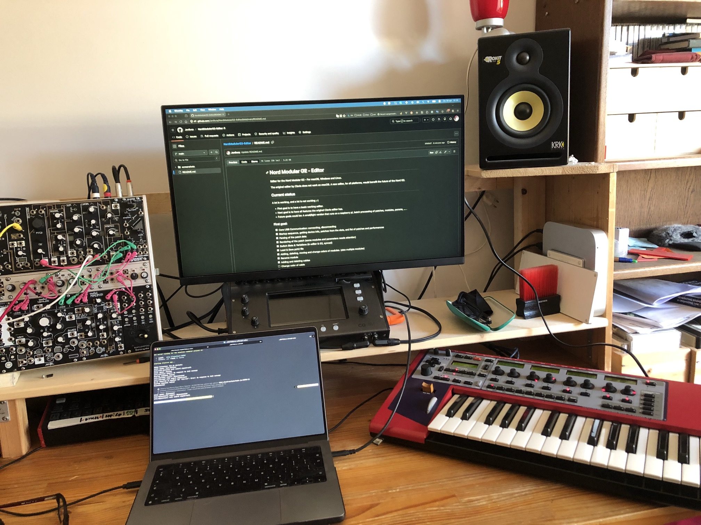

cli/) — C tool handling all USB communication with the G2 hardware. Outputs JSON to stdout; accepts JSON commands on stdin.g2-editor/) — Vue 3 + TypeScript desktop app. Communicates with the G2 through the CLI daemon.brew install libusbcd cli
make # build
make test # run all tests
make test-unit # unit tests (no G2 needed)
make test-integration # integration tests (needs connected G2)
cd g2-editor
npm install
cd ../cli && make && cd ../g2-editor # rebuild CLI first
npm run postinstall # copies CLI binary into app resources
npm run dev # development server
npm run build # production build + package
npm test # Vitest unit tests

Developed on M1 Apple Silicon, macOS 15.7.3, with an expanded Nord Modular G2.
For interactive daemon testing, use the tmux launcher (requires tmux):
cd cli
./g2tmux.sh
This opens a split-pane tmux session:
See CLI Commands for available commands.